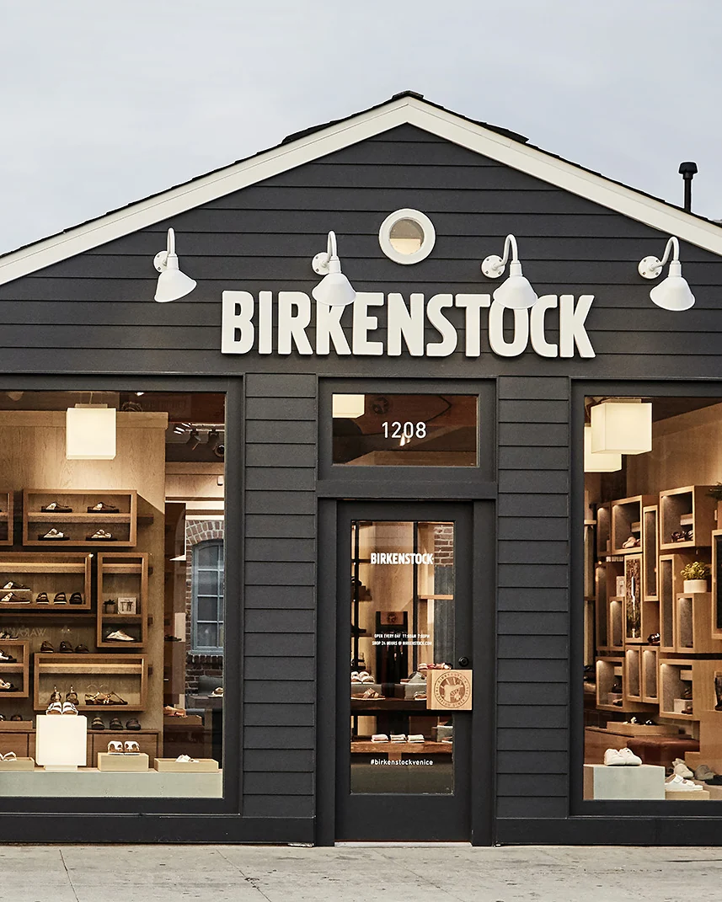
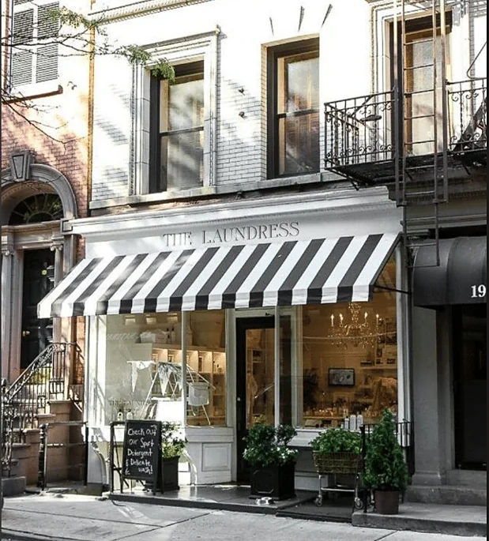
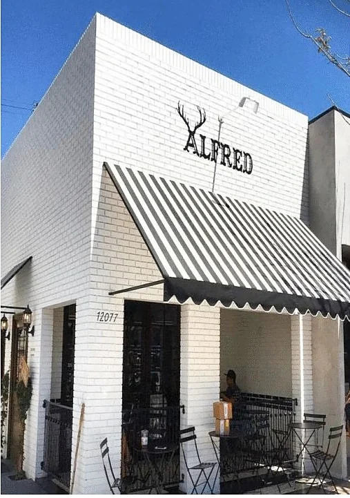
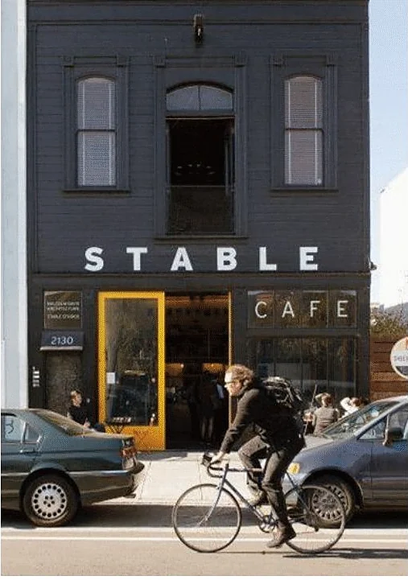
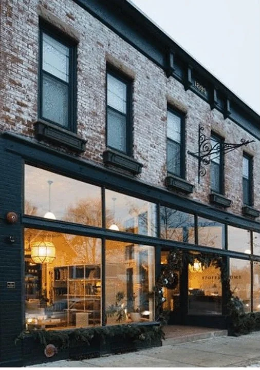
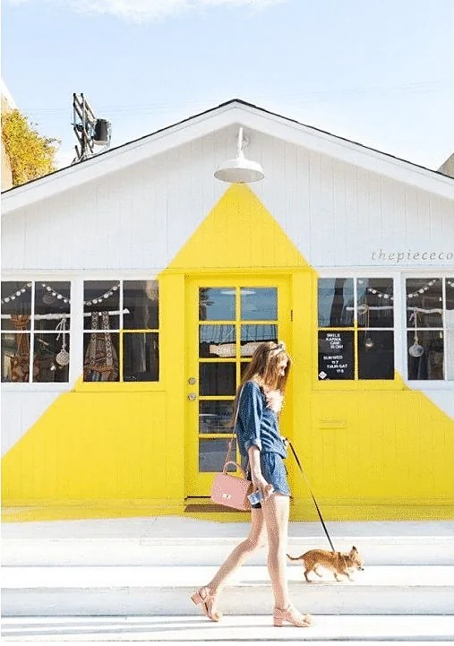
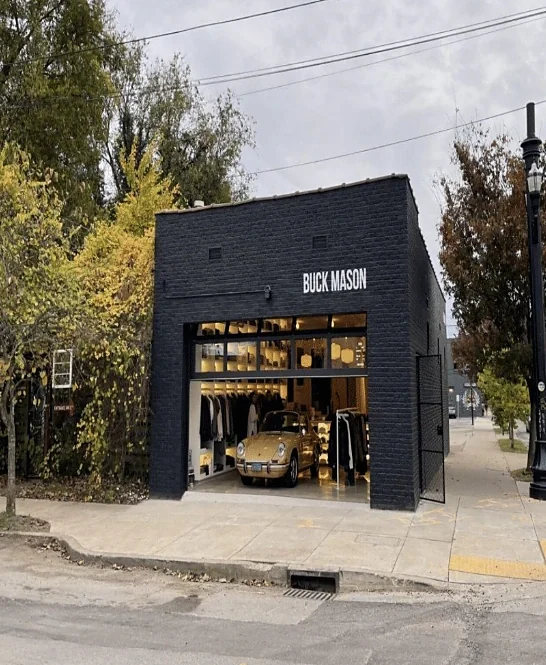
Mercado — retail real estate investment and advisory
An integrated retail real estate investment and advisory platform, working at the scale of the ground plane.
Scroll
About us
We craft immersive retail environments that embody the distinct character and individuality intrinsic to the communities they inhabit.
Whether a master-planned district or a street-front retail collection, our properties are vibrant hubs where people come together to live, work, shop, dine, and embrace life.
We shape spaces that captivate today, endure tomorrow, and resonate for generations.
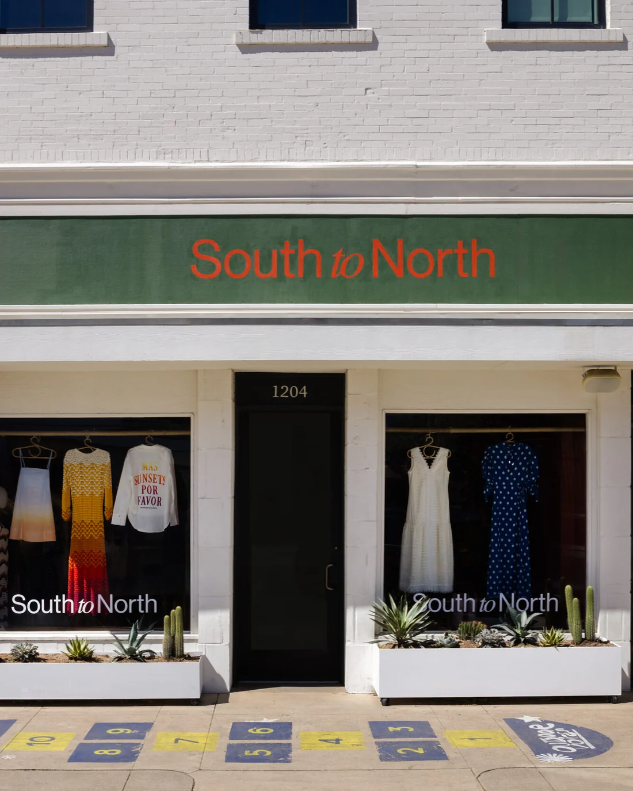
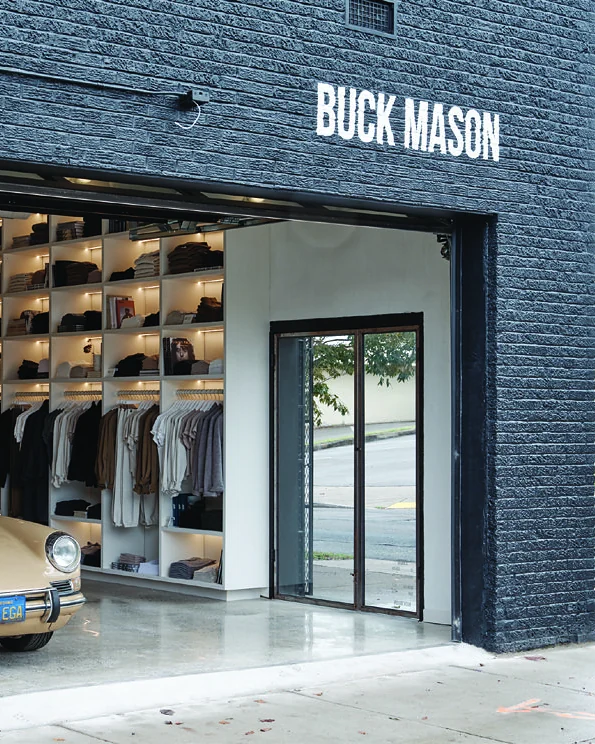
Mission
Our
are our .
Advisory
Overview
Retail is a highly specialized discipline, and generalist firms routinely seek external proficiency to execute it.
In select instances Mercado advises clients on retail pursuits, offering intellectual retail capital built through decades of specific experience. Our strategic roles range from an outsourced solution to a full partner across vision, design, development, leasing and capitalization.
Vision partner
Vision
Set and maintain the north star across retail spaces and the public realm.
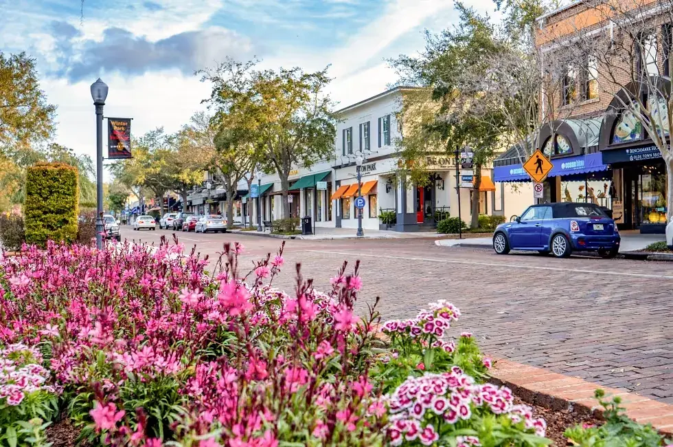
Design execution
Design
Manage Architecture RFP, design direction, feasibility and drawing completion.
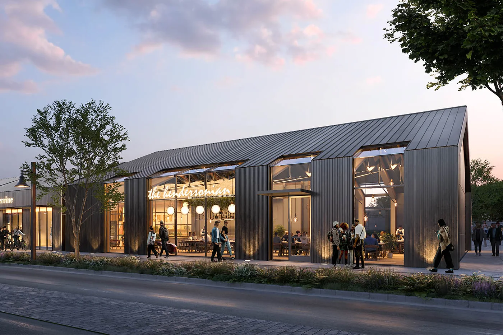
Development execution
Development
Manage large-scale ground-up developments and redevelopment.
Leasing execution
Leasing
Data-driven intelligence, merchandising strategy and marketing oversight.
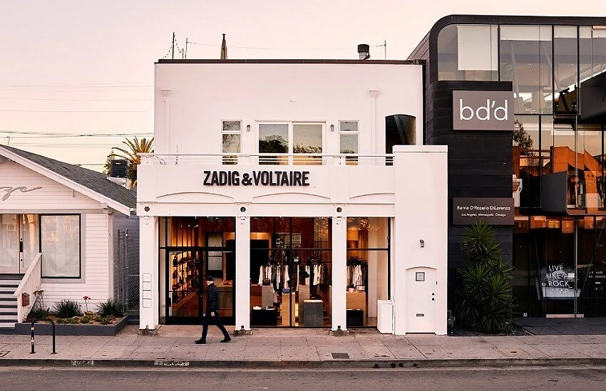
Capitalization execution
Capitalization
An outsourced finance desk across debt and equity.
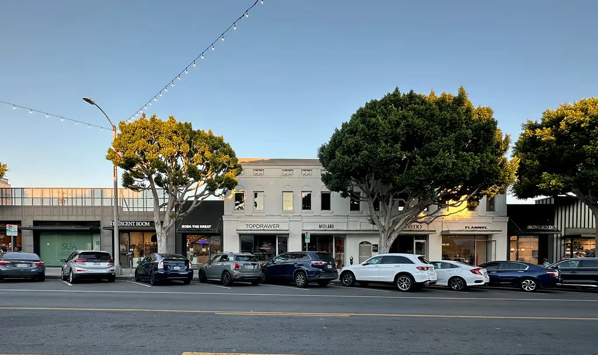
Have a retail problem worth solving?
Projects
Investments
Programmatic vehicles of irreplaceable community retail infrastructure.
Overview
Mercado is an integrated retail real estate investment platform creating value across streets and neighborhoods throughout the country.
A methodical investment strategy leverages sector trends to capture scalable thematic opportunities. The specialized platform creates incremental alpha at every phase of the business plan and asset life cycle.
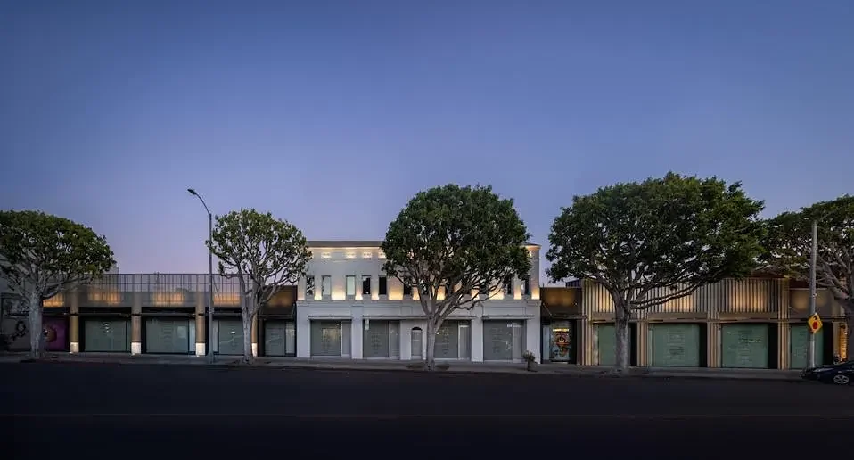
Criteria
Streets and neighborhoods throughout the country. The unit of analysis is the corridor as much as the building — its tenancy, its frontage, and how people move along it.
Individual assets between ten and fifty million dollars.
$10–50m
Per asset
Retail that sits on a street rather than behind a parking field, plus the low-coverage sites whose real value is the land under them.
- 01
- Street retail
- 02
- Neighborhood center
- 03
- Dispersed single-story office
- 04
- Low coverage
The conditions that price an asset down and that an operator can fix: rent that rolls soon, space that is empty, maintenance that was deferred, and leasing costs a passive owner would rather not carry.
- 01
- Value-add potential
- 02
- Short-term leases
- 03
- In-place vacancy
- 04
- Deferred maintenance
- 05
- Leasing costs
Three routes into an asset: outright ownership, partnership, or a position in the capital stack.
- 01
- Fee simple
- 02
- Joint venture
- 03
- Preferred equity
Every corridor is read at one, three and five miles — the rings that separate a walk-up trade area from a drive-to one.
1 · 3 · 5
Radius, miles
Bring us a corridor, or bring us capital.
Experience
Tenants
Overview
We use data-driven methods to optimize brand and site selection — attracting valuable customers to our properties while mitigating turnover risk and safeguarding capital.
What we look for
- 01Supporting independent brands
- 02Fostering emerging talent
- 03Introducing first-to-market concepts
- 04Applying global ideas locally
- 05Building communities through programming
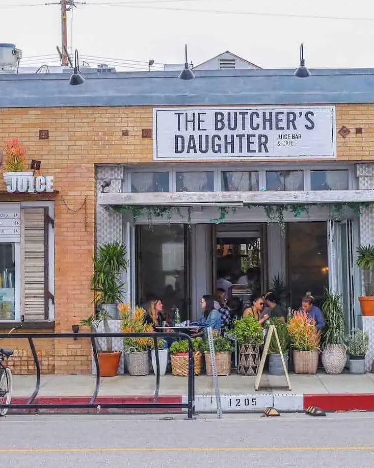
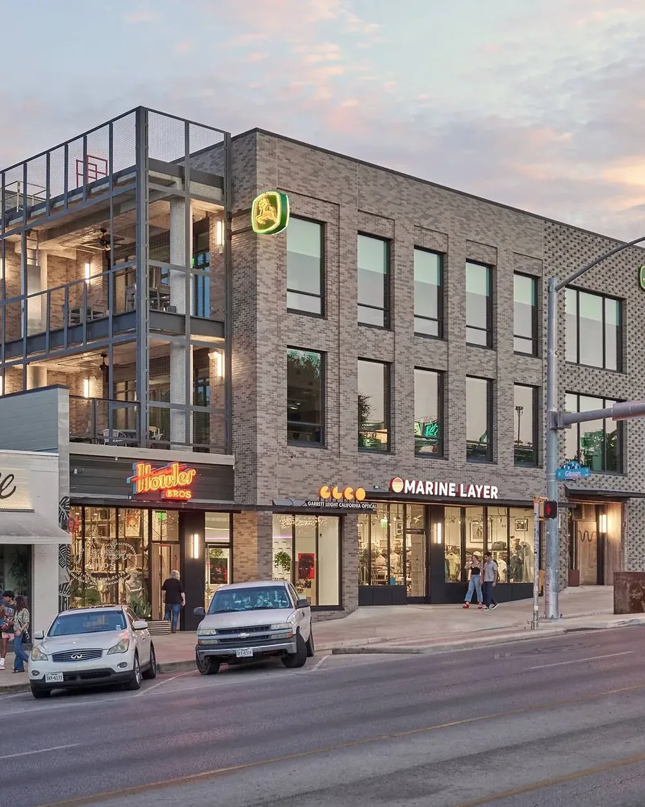
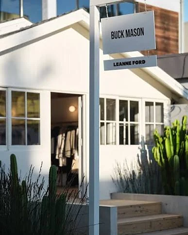
Merchandising, signage, sidewalk life — the evidence that a tenant chose the street, not a floor plate.